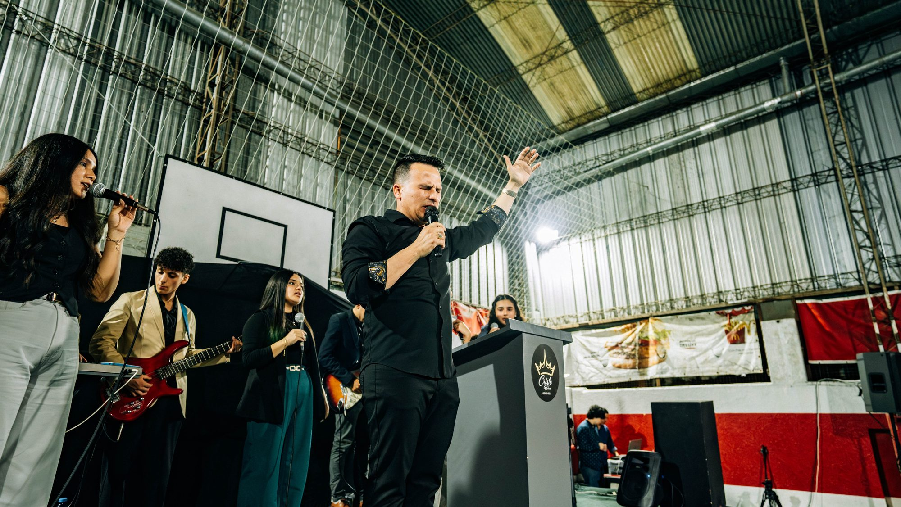
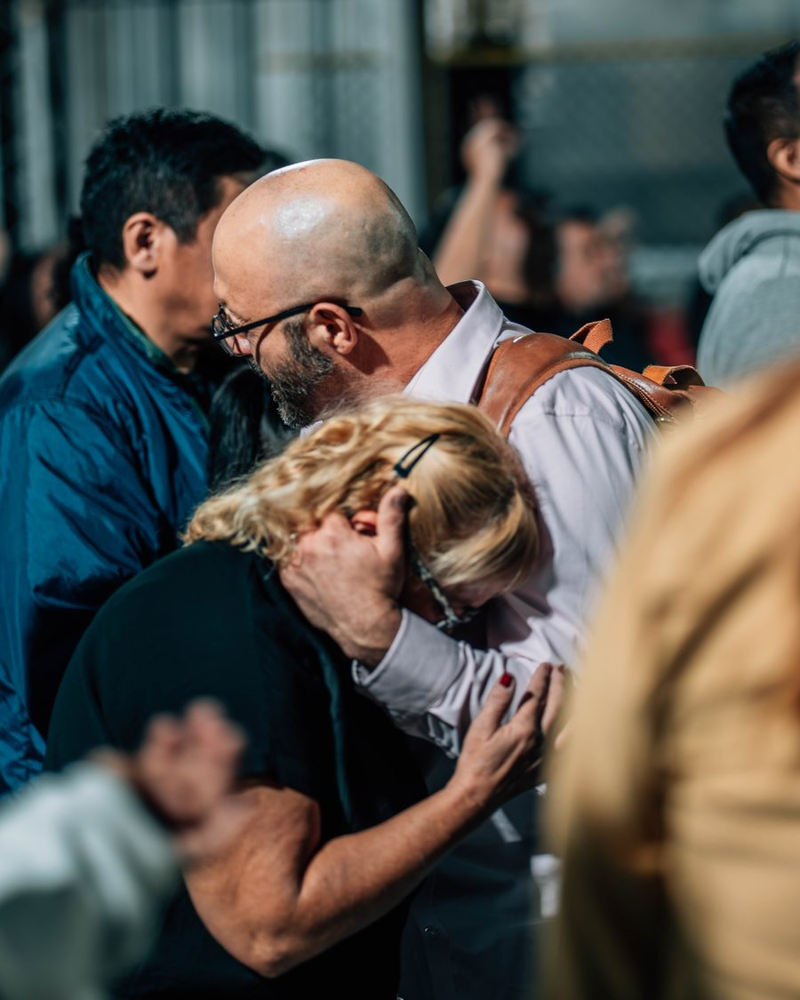
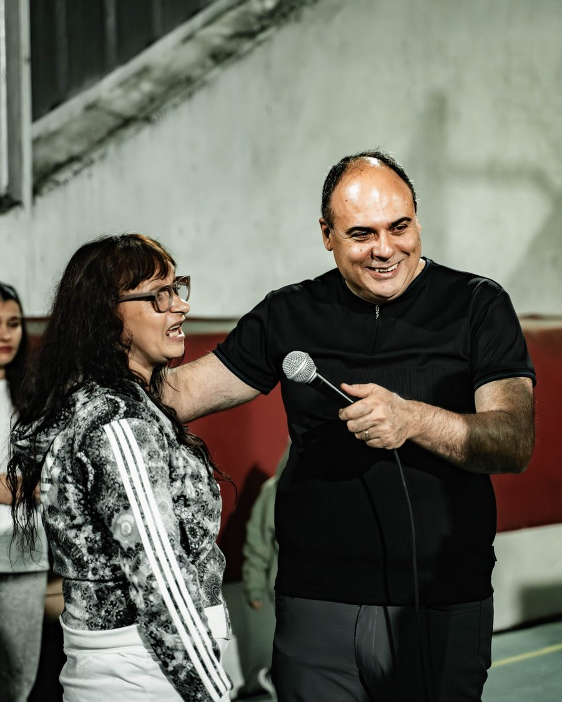
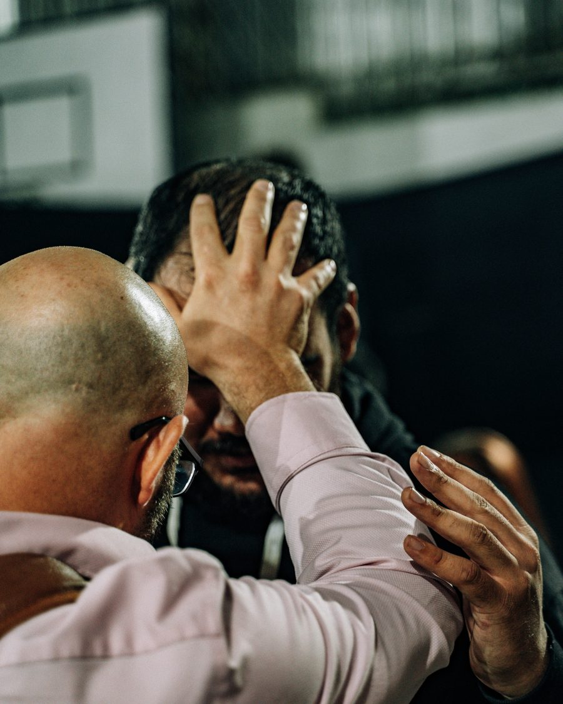
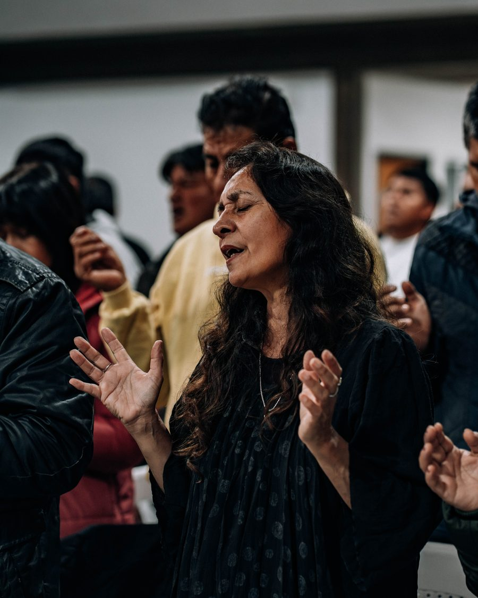
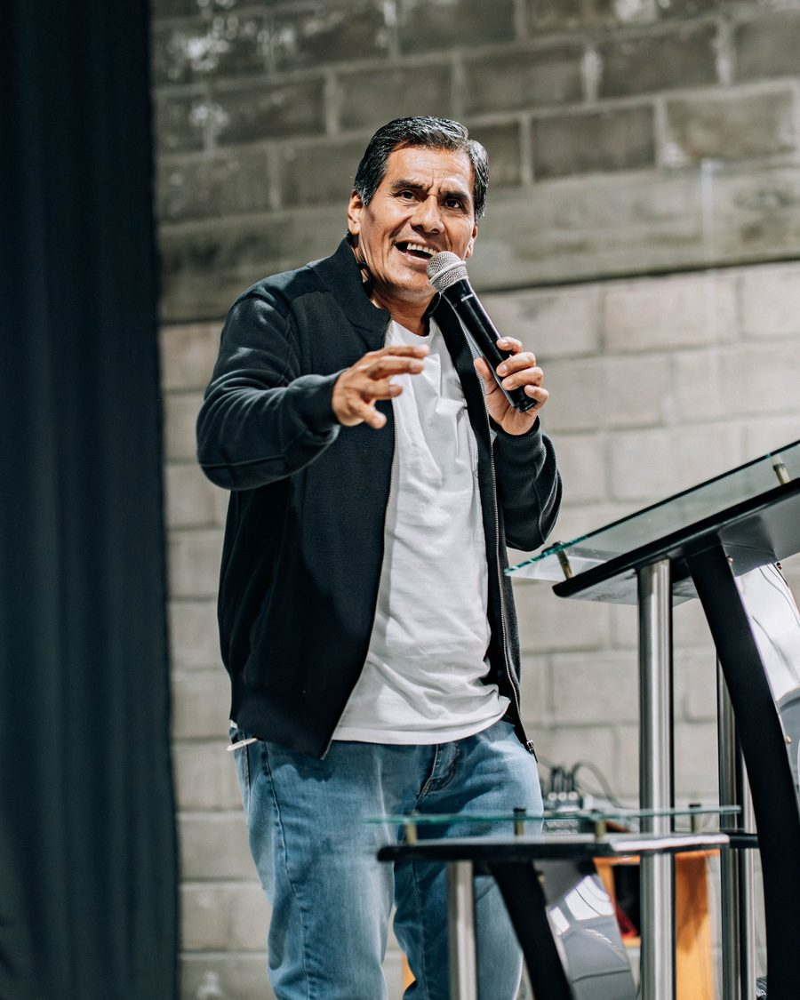
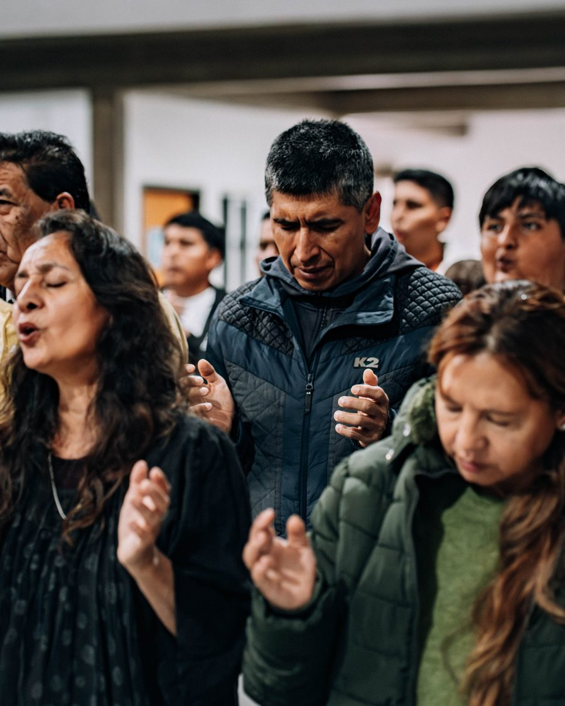

Enfermos sanan, familias se restauran y comunidades enteras son transformadas por el poder de Dios en acción.
The sick are healed, families restored and entire communities transformed by the power of God in action.



Del Viso y Buenos Aires son dos focos del avivamiento. Noches enteras de adoración, palabra y manifestación del Espíritu que sacuden el conurbano bonaerense. Cientos de familias encontraron sanidad, restauración y esperanza.
Del Viso and Buenos Aires are two revival focal points. Full nights of worship, the word and Holy Spirit manifestation that shake Greater Buenos Aires. Hundreds of families found healing, restoration and hope.


Jujuy, una de las provincias más postergadas del país, vivió noches de avivamiento que transformaron comunidades enteras. La fe en acción no conoce fronteras geográficas ni sociales.
Jujuy, one of the country's most underserved provinces, witnessed revival nights that transformed entire communities. Faith in action knows no geographic or social boundaries.

El Jardín de la República también fue alcanzado por el fuego del avivamiento. Familias enteras experimentaron el poder sobrenatural de Dios, marcando un antes y un después en la región.
The Garden of the Republic was also reached by the fire of revival. Entire families experienced God's supernatural power, marking a turning point in the region.
"Sanen a los enfermos... y digan: el reino de Dios se ha acercado a ustedes."
"Heal the sick... and tell them: the kingdom of God has come near to you."Lucas 10:9
Únete a la próxima cruzada en Argentina o apoya esta misión.
Join the next crusade in Argentina or support this mission.
Tu donación sostiene misiones en Argentina, Cuba y Estados Unidos.
Your donation supports missions in Argentina, Cuba and the Úneted States.
100% va al campo misionero.
100% goes to the mission field.